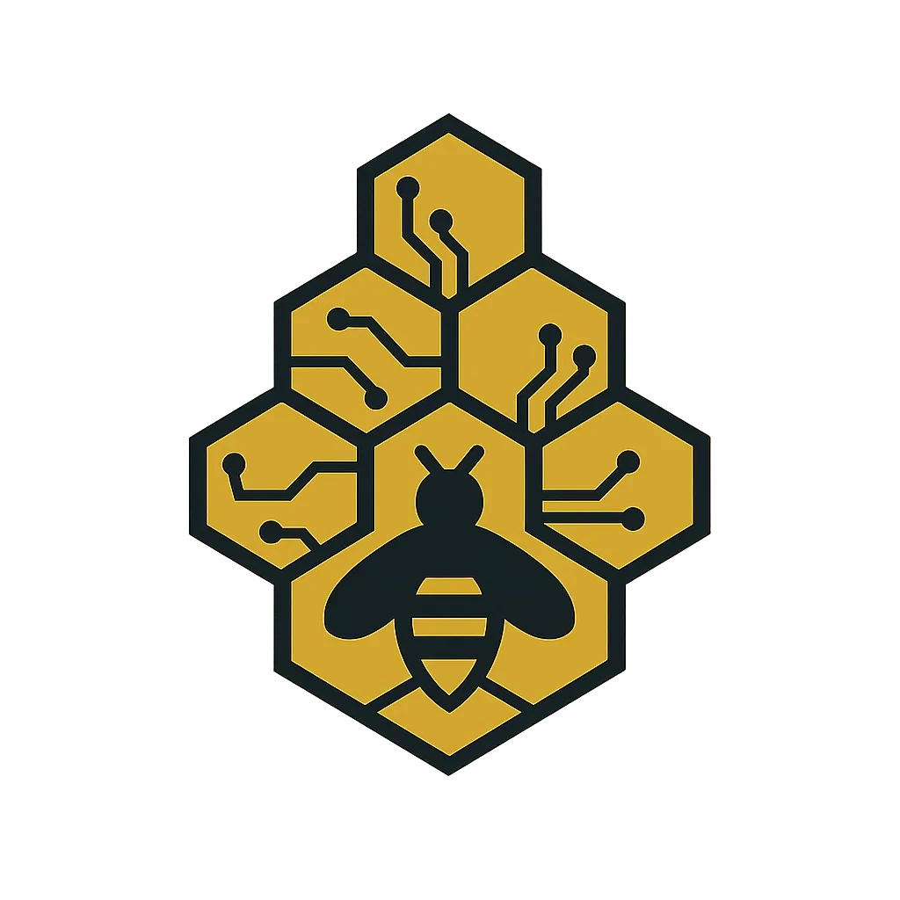

MINIMALISTA
CONVERSA
SKILLS

C.O.R.E.
CLAUDE OBSIDIAN REASONING ENGINE
CORE
IDLE
LINK
ONLINE
VAULT
ALIVE
00:00:00
—
FABLE 5
OPUS 5
SONNET 5
HAIKU 4.5
PADRÃO
LOW
MEDIUM
HIGH
XHIGH
MAX
NÚCLEO · CLAUDE
SYNC 0xA3
✕ CANCELAR
ONLINE
MIC · LVL
AUDIO I/O
FABLE 5
OPUS 5
SONNET 5
HAIKU 4.5
PADRÃO
LOW
MEDIUM
HIGH
XHIGH
MAX
FECHAR
ENVIAR
RELATÓRIO
NOVA GUIA
EXCLUIR
FECHAR